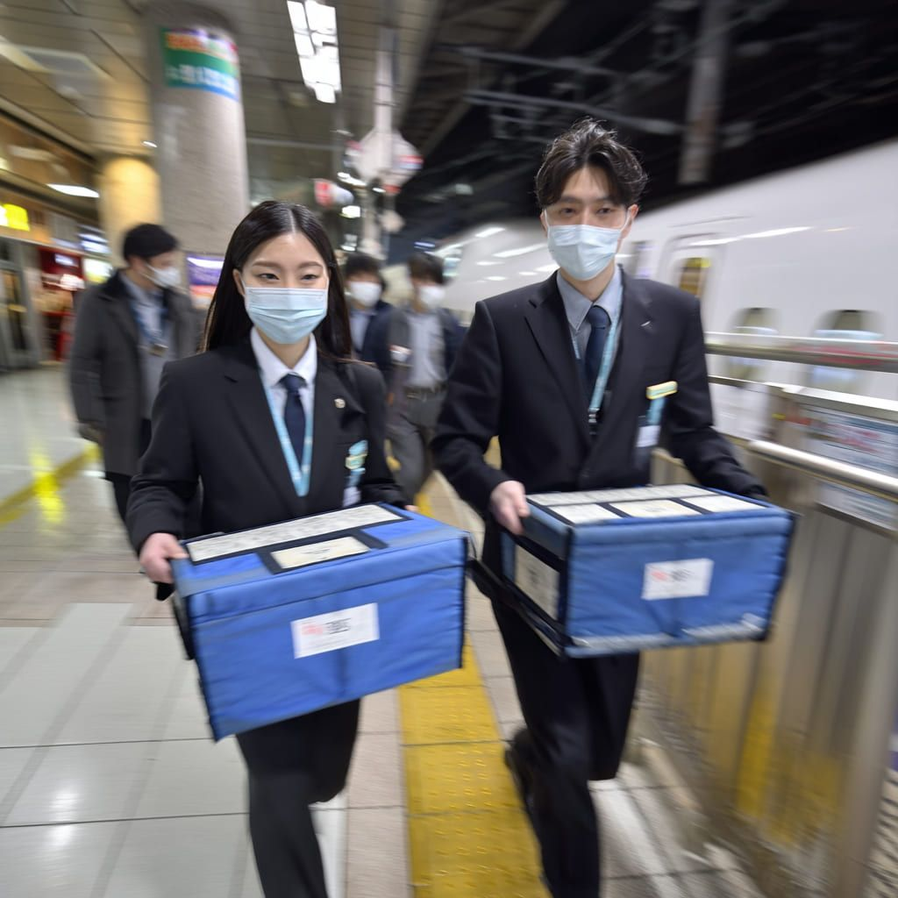
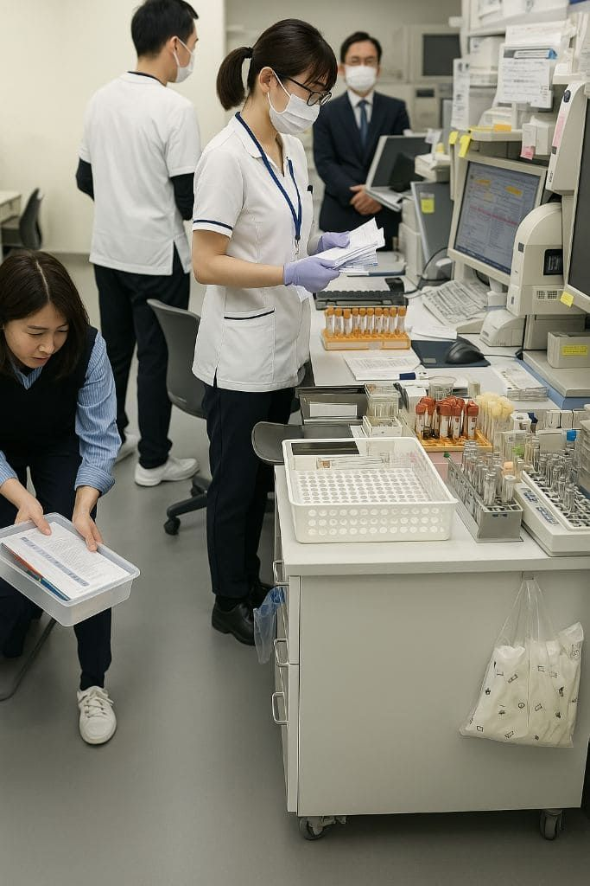
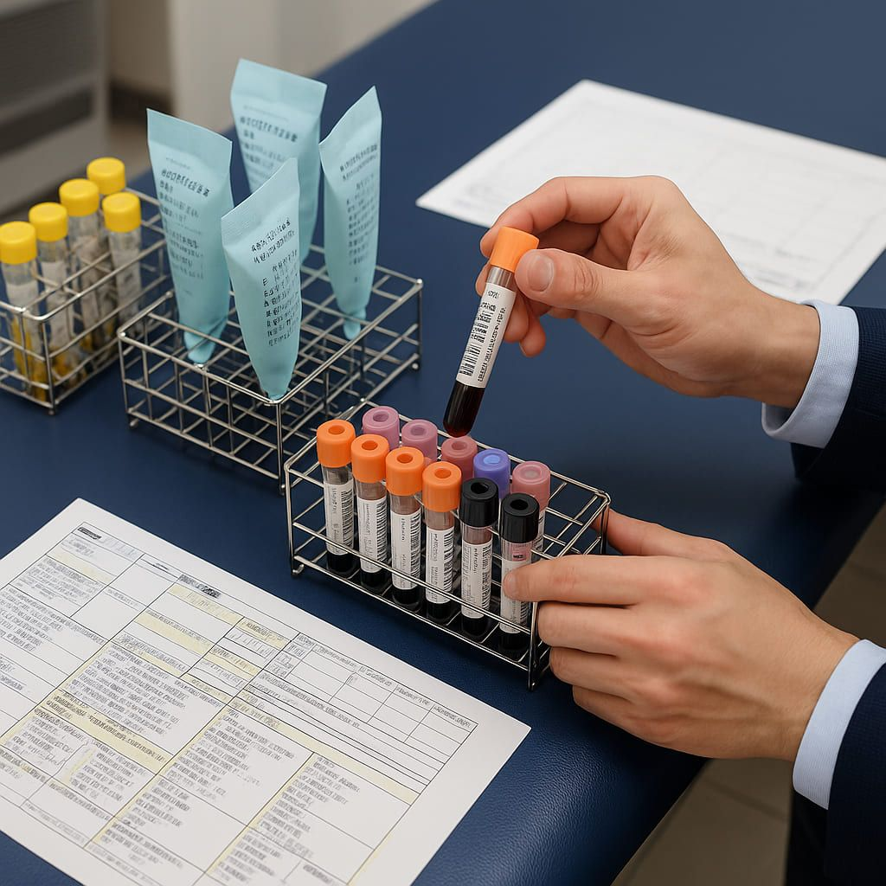
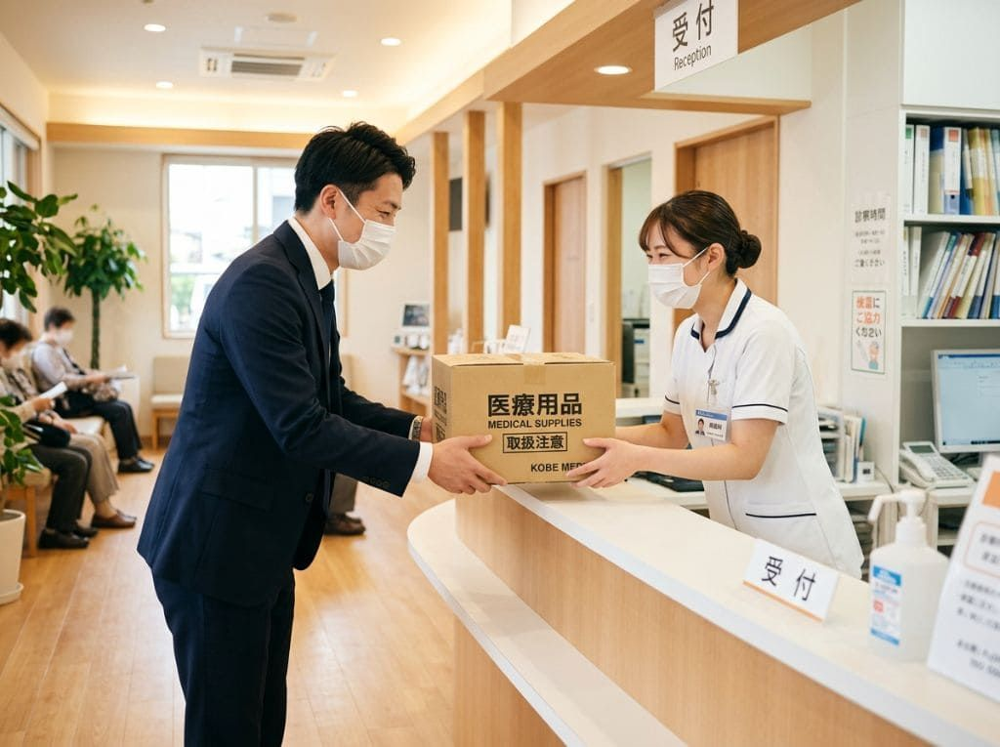
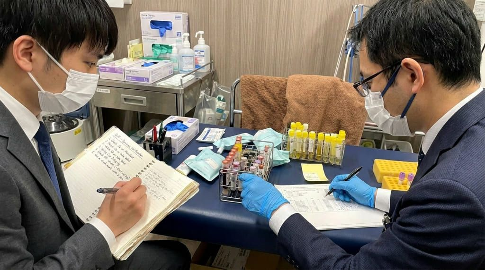
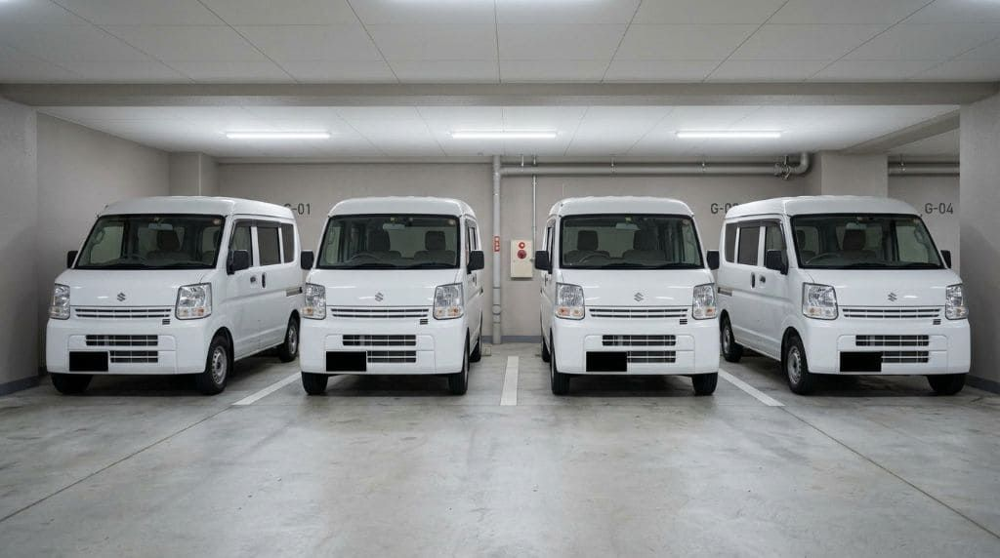
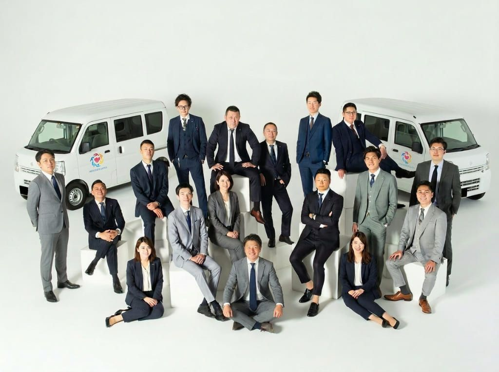
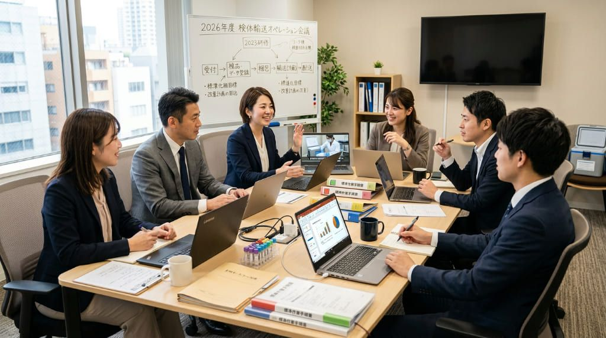
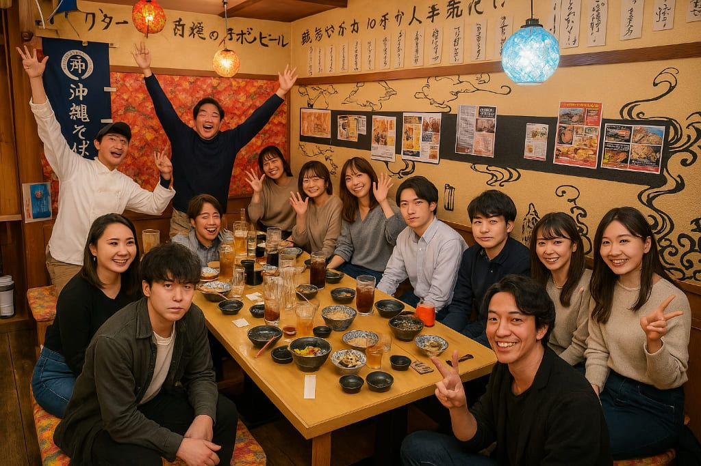
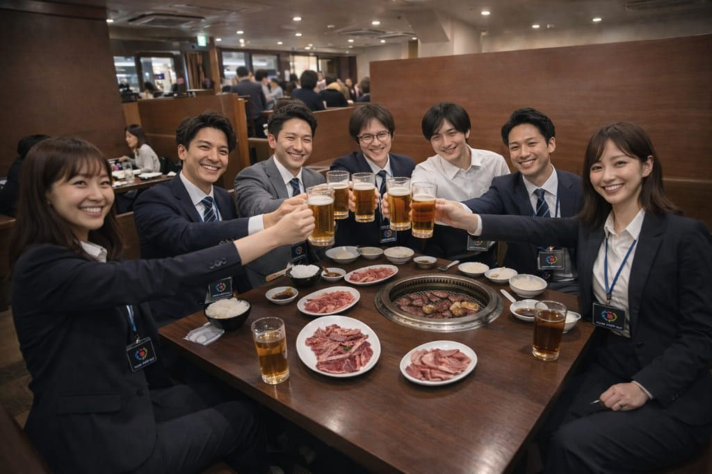

血液、細胞、遺伝子——一つひとつが患者さまの未来につながる医療検体を、
正確に、丁寧に、責任をもって届ける仕事です。
THE TRUTH
求人を見ていると、魅力的な言葉が並びます。
でも、入ってみて「こんなはずじゃなかった」という声が、業界には溢れています。
だから、私たちは違います
OUR ANSWER
「なんとなく仕事を覚える」ではなく、すべての業務に手順書があります。誰でも同じクオリティで動ける仕組みをつくっています。
医療検体輸送という専門性の高い分野。一般宅配とは違う市場で、安定した需要の中で働けます。
「聞いていた話と違う」は絶対にしません。案件内容・報酬・業務範囲はすべて事前に明示。透明性が私たちの基本姿勢です。
「入ったら終わり」ではありません。現場の声を吸い上げ、業務改善を継続。あなたの働き方がより良くなり続けます。
私たちは、ただのドライバーを採用しているのではありません。コミュニケーション力、リーダーシップ、几帳面さ——それぞれの特技・スキル・良いところを見極め、さらに伸ばす環境をつくっています。
あなたらしい働き方が、ここにあります。
PAIN POINTS
毎日時間に追われ、
落ち着いて仕事ができない
再配達・不在対応が多く、
時間にも気持ちにも余裕がない
重い荷物を数多く運び続ける
働き方に身体的な負担を感じている
ただ運ぶだけでなく、
もっと意味のある仕事に関わりたい
長く続けられて、
安心して働ける仕事を探している

未経験でも、きちんと教えてもらえる
環境で新しいことを始めたい
ひとつでも当てはまるなら——
医療検体輸送という働き方は、
あなたに合っているかもしれません。
掲載している写真は一部、個人情報・機密情報などの兼ね合いで加工しています。
MEDICAL TRANSPORT
私たちが扱う医療検体は、一つひとつに異なる意味と重みがあります。
それぞれの特性と緊急性に応じて、迅速に・正確に・確実に届けることが求められる仕事です。

時間的に最優先の検体は、新幹線やタクシーを使ったハンドキャリーで対応。スーツ・マスク・手袋姿でホームを走り抜けるのも、私たちの仕事のひとつです。車に乗るだけが"輸送"ではありません。

毎日の健康診断で採取された大量の血液検体を、種別・項目ごとに確認・仕分けして回収。正確さと丁寧さが求められる定期業務です。

病院やクリニックで検体を受け取る際、依頼書・指示書と内容が一致しているかを照合。"受け取るだけ"ではなく、確認して初めて成立する業務です。

スーツ姿で医療機関を訪問し、検体を受け取ります。清潔感ある身だしなみと礼節ある対応が求められる、医療現場との信頼の最前線です。

検体の状態（溶血の有無・量の適正）と書類内容の整合性を確認する付帯業務。"ただ運ぶ"のではなく、確認・判断ができる力が求められます。
深夜0時を過ぎても走り続ける輸送案件があります。緊急性の高い検体や、翌朝の検査に間に合わせるための長距離ルート。24時間動き続ける医療の現場を、私たちは止めません。
掲載している写真は一部、個人情報・機密情報などの兼ね合いで加工しています。
VS DELIVERY
DRESS CODE
それは、私たちが運ぶものが「荷物」ではなく「信頼」だから。
「運ぶ技術」だけでなく、信用・清潔感・接遇・礼節も仕事の品質の一部です。医療機関はその目線で、信頼できるパートナーを選んでいます。
もし医療機関の立場だったら——ジャージや作業着のまま来たドライバーに、命に関わる大切な検体を安心して託せるでしょうか。
清潔感ある身だしなみは、相手への敬意であり、仕事への誠実さの表現です。私たちはそこまで含めて"輸送品質"だと考えています。
この考え方に共感できる方と、一緒に仕事をしたいと思っています。
まず話を聞いてみるGROWTH STEPS
医療輸送の仕事には、さまざまなレベルがあります。
経験を積むほど、担当できる業務の幅が広がり、任される価値も高まっていきます。
血液の本数確認、セット済み検体ボックスの搬送。決められたルールに沿ったシンプルな搬送からスタート。
検体と依頼書・指示書を照合し、内容が合致しているかを確認する業務。"運ぶ"から"間違いなくつなぐ"へ。
溶血していないか。検査に必要な状態が保たれているか。検体の状態を見て適切に判断できる力が求められる。
検査項目に対して量は適正か、不足していないか、代替検体で対応できるか。医療的知識を活かした高度な判断業務。
緊急検査で正しく検査が可能な時間制約の理解。優先順位の判断。スピードと知識の両方が求められる、最高難度の領域。
IDEAL PERSON
私たちは「配送できる人」ではなく、現場で信頼される人を求めています。
現場では時間変更・追加対応・イレギュラーが生じます。状況を整理し、落ち着いて対応できる柔軟性が大切です。
"やったことがない"で終わらず、どうすればできるようになるかを考え、まずはやってみる姿勢。この考え方が持てない方には難しい仕事です。
コミュ力・確認力・リーダーシップなど、走る以外の個人スキルも高く評価します。あなたが持っている強みを、そのまま仕事の価値に変えられます。
ただ指示通りに動くだけでなく、もっと良くするにはどうするかを考えられる人。現場の課題に前向きに関わる提案力を歓迎します。
医療に関わるものだからこそ、確認を怠らず、時間を守り、最後まで責任を持ってやり切れること。その一つひとつが信頼につながります。
目立つ仕事ではなくても、医療現場の"止められない日常"を支えていることに、誇りとやりがいを感じられる方に向いています。
DAILY FLOW
当日の回収先、納品先、ルート、注意事項を確認。必要な資材・伝票・運行内容を整えて出発します。
病院やクリニックを訪問し、検体を受け取ります。受け渡し時には、確認の正確さ・清潔感・礼節ある対応が大切です。
検体の内容や時間指定に応じて、安全かつ正確に輸送。案件によっては、照合・状態確認・量の確認も担当します。
無理のない流れの中で休憩を取り、午後の業務に備えます。
午後の回収や定期便、案件によっては追加対応へ。日々の定期案件から緊急性の高い案件まで、内容はさまざまです。
配送完了報告や必要事項の確認を行い、業務終了。その日の内容を整理し、次の業務につなげます。
※案件・ルートにより時間帯や流れは異なります。
ONBOARDING FLOW
ミスマッチが起きないよう、事前のヒアリング・面談をしっかり行います。
案件によって数日〜1か月の研修期間があり、独り立ちまで丁寧にサポートします。
フォームまたはLINEからお気軽にご連絡ください。「まず話を聞いてみたい」という段階でも大歓迎です。
稼働希望エリア・時間帯・案件の詳細など、あなたの希望をしっかり伺います。ここで双方の条件をすり合わせ、最適な案件をご提案します。
医療現場では企業情報・個人情報など機密性の高い情報を取り扱います。安心して業務に携わっていただくため、秘密保持契約書を締結します。
締結内容・業務内容・報酬体系などを直接すり合わせします。疑問点や不安なことは、この場でなんでも聞いてください。
面談で双方のすり合わせが完了したタイミングで、業務委託契約を締結します。報酬体系・稼働条件・業務内容など、契約内容を一つひとつ確認のうえで正式に契約を結びます。
実際の現場に同行しながら、業務の流れ・マニュアル・ルートを習得します。案件によって研修期間は異なります。
研修完了後、いよいよ独り立ちです。スタート後も定期的なフォローアップがあるので、一人で抱え込む必要はありません。
RECRUIT AREA
基本的に全国でパートナーを募集しています。
首都圏・東海（名古屋含む）・関西・九州エリアは特に採用を強化中です。
NATIONWIDE
基本的に全国対応。お住まいのエリアがどこでも、まずはご相談ください。
MEDI ALPHA PLUSの本拠地。
最も多くのルートを持ち、安定した依頼が続いています。
上記以外のエリアも随時ご相談を受け付けています。
「自分のエリアは対象？」という段階でも大歓迎です。
あなたのいるエリアから、
医療を支える仕事を始めよう。
「自分のエリアは対象？」という段階のご相談も大歓迎です。
希望エリアをLINEで相談するINCOME & CONDITIONS
よくある「月80万円以上可能」といった派手な収入訴求はしません。
長く安心して働き続けられる環境を前提に、スキルと信頼が収入に反映される仕組みです。
働き方や案件の組み合わせによって、収入の形はさまざまです。
※案件内容・担当領域・稼働日数・組み合わせにより変動します。収入額を保証するものではありません。詳細は面談時にご案内します。
VEHICLE LEASE
「車がない」「購入が不安」という方でも大丈夫。
稼働スケジュールや予定に合わせて、柔軟にご相談いただけます。

掲載している写真は一部、個人情報・機密情報などの兼ね合いで加工しています。
車両をお持ちでない方も、安心してスタートできます。
案件内容・稼働日数・希望に応じて、最適な車両をご提案します。
週3日・フルタイムなど、あなたの稼働ペースに合わせてリース内容を調整できます。
稼働日数や予定に変動が出た場合も、契約内容を柔軟に見直せます。一人ひとりの状況に合わせて丁寧に対応します。
案件に応じた車種をご用意。医療検体輸送に適したサイズ・仕様で安心して業務に臨めます。
EMPLOYMENT TYPE
正規雇用は
「会社が守る働き方」
業務委託は
「自分で選び、
責任を持つ働き方」
業務委託という働き方は、自由度が高い反面、
確定申告や契約面など、個人で対応する必要があります。
そのため、不安を感じる方も多いのが実情です。
OUR COMMITMENT
MEDI ALPHA PLUSでは、
個人で抱え込まない仕組みを整えています。
顧問税理士を通じた相談が可能。初めて業務委託で働く方でも、税務面の不安を一人で抱えなくて済みます。
契約内容の説明から運用上の疑問まで、丁寧にサポートします。分からないことは何でも聞いてください。
独り立ちまで現場に同行し、実務を通じてしっかり身につけられる環境を用意しています。
「自由に働く」だけで終わらせない。
「長く続けられる環境」まで設計しています。
SUPPORT
医療検体輸送ならではの基礎知識・取り扱いルール・現場での対応方法を、初めての方にも分かりやすくお伝えします。
座学だけでなく、実際の業務を想定した研修とOJTで、仕事の流れを一つずつ身につけられます。全業務のマニュアルも完備。
業務委託が初めての方でも安心して始められるよう、確定申告などのご相談もしやすい体制を整えています。
仕事を始めた後も、定期的な勉強会や情報共有を通じて、知識と対応力を磨き続けられる環境があります。
WORK ENVIRONMENT
MEDI ALPHA PLUSでは、ただ業務を任せるだけではなく、安心して現場に出られるよう、相談しやすい関係づくりを大切にしています。
業務中のやり取りはもちろん、定期的な情報共有や任意参加の食事会・交流の機会もあり、現場で働く人同士が自然につながれる雰囲気があります。
一人で集中して取り組める時間と、必要なときに相談できる安心感。その両方があるからこそ、長く続けやすい環境につながっています。

掲載している写真は一部、個人情報・機密情報などの兼ね合いで加工しています。
業務委託は最初少し不安でしたが、実際に始めてみると、サポート体制がしっかりしていて驚きました。確定申告の相談や、業務のフォローなど、必要な部分はきちんとサポートしてもらえます。完全に放置されることはなく、"任せるけど支えてくれる"バランスがちょうどいいです。今は、自分のペースで働きながら収入も安定してきました。
この仕事は単なる配送ではなく、医療に関わる専門性のある仕事だと感じています。知識や経験が積み重なっていくので、続けるほど価値が上がるのも魅力です。また、会社自体も成長しているので、今後の展開にも期待を持っています。患者目線で、自分が何の検査を受ければいいかという知識もわかるようになってきました（笑）。ただのアルバイト感覚ではなく、"自分の将来につながる仕事"として続けています。
検査会社のコース業務から始めました。最初は、検体の種類・依頼書の読み書きなど覚えることはたくさんでしたが、今では複数社の検査会社の業務立ち上げ・引継ぎにも携わっています。情報量は多いですが、これを覚えることで様々な案件も初見で対応できますし、誰でも出来るわけではないというところにこそ、すごく価値を感じます。
やりたいことも積極的に後押ししてくれる会社で、現場の意見もしっかり受け入れてもらえる環境です。一方的に指示されるのではなく、現場と会社が一緒に作っていく感覚があります。会社の成長がそのまま現場にも反映されるので、「自分もその一部なんだ」と感じられて、日々の仕事にも前向きに取り組めています。
OUR MISSION
医療輸送の業界は、ニッチで専門性が高い一方で、古い商流や慣習が残っている領域でもあります。
現場を深く理解しているわけでもないのに、間に入って手数料だけが積み上がっていく。
実際に汗をかき、責任を持って動いている人が、その価値に見合う評価を受けられていない。
そんな現実が、まだ少なくありません。
私たちは、そうした業界のあり方を変えていきたいと考えています。
軽貨物という仕事を、専門性と信頼で選ばれる仕事へ。
一人ひとりが自信を持って業務に臨める環境へ。
クライアントに価値を感じていただける、誇りある仕事へ。
検体・治験・医療物資輸送に特化した専門チームとして、医療現場の動線を理解した高品質な輸送を提供しています。
スーツ着用・マスク・グローブを全スタッフに徹底。医療現場にふさわしい清潔感と礼節を、当たり前の水準として維持。
「9:30に〇〇病院検査室へ」という精度で動く、オンタイム達成率99.8%。時間管理の高い正確性が信頼の基盤。
座学研修・OJT・現場同行研修・全業務マニュアル完備。未経験からでも確実に成長できる仕組みを整備。
OUR POLICY
なぜ、直接契約にこだわるのか。
私たちが協力会社を挟まない理由は、明確です。
一社挟むだけで、私たちの教育方針・品質基準・医療現場へのこだわりが正確に伝わらなくなります。クオリティの担保は、直接の関係からしか生まれません。
協力会社が介在することで、私たちがお支払いする金額と、実際にドライバーの手元に届く金額の間に乖離が生まれます。それは、現場で動く人への不誠実だと考えています。
現場で動く人と直接コミュニケーションをとり、困ったことはすぐに話せる関係をつくる。業務改善のアイデアも、不満も、本音も——間に誰かが入ると、それが届かなくなります。良い関係は、直接の対話からしか生まれないと私たちは信じています。
COMMUNITY
業務委託だから「孤独」——そんな働き方はしません。
定期的な集まりやイベントで、チームとして一緒に成長する文化があります。



掲載している写真は一部、個人情報・機密情報などの兼ね合いで加工しています。
会社規模の集まりを定期開催。情報共有・業務改善・メンバー間の交流を大切にしています。
仕事だけでなく、人として知り合える場も。業務委託でも「チームの一員」として歓迎します。
仲間同士で助け合えるネットワークが自然にできます。孤独にならない働き方が、ここにあります。
活躍したメンバーをきちんと認める文化。「誰かが見てくれている」という安心感が、長く続けられる理由です。
HOW TO START
お問い合わせから稼働開始まで、
丁寧にサポートします。まずは気軽にご連絡ください。
LINEまたはお問い合わせフォームからご連絡ください。「話を聞きたいだけ」という段階でも大歓迎です。
担当者とオンラインまたは対面でお話しします。希望エリア・稼働時間・不安なことなど、何でも率直にお聞かせください。
業務委託契約書の締結と必要書類のご提出をお願いします。案件内容・単価・条件をすべて明示した上でご確認いただきます。
座学研修・マニュアル確認・現場同行OJTを実施。未経験でも「わかった」と感じてから稼働スタートできるよう、丁寧にサポートします。
いよいよ医療検体輸送パートナーとしての第一歩。稼働後も担当者が定期的にフォローします。困ったことがあればいつでも相談できる環境です。
RECRUIT JOBS
掲載案件は随時更新しています。気になる案件があればお気軽にご相談ください。
掲載しているのは募集案件の一部です。非公開案件も多数ございますので、お気軽にお問い合わせください。
FAQ
応募前の疑問にお答えします。解決しない場合はLINEまたはフォームよりお気軽にご相談ください。
雇用契約ではなく、個人事業主として業務を受託する働き方です。
働き方の自由度が高い一方で、ご自身でスケジュールや収入をコントロールできます。
問題ありません。
医療検体の取り扱いや業務の流れについては、研修・同行サポートを行っています。
性別に関わらずご活躍いただいています。
軽量物が中心のため、体力的な負担は比較的少ない業務です。
医療・研究分野における輸送対象は多岐にわたります。主なものとして以下が挙げられます。
一言で「医療輸送」といっても取り扱う対象はさまざまで、正確性・安全性・スピードが同時に求められる、専門性の高い業務です。
一般宅配は「荷物を届けること」が主な業務ですが、医療検体輸送は「運ぶ」こと以外にも多くの付帯業務があります。
また、再配達がほぼなく、荷物は軽量・繊細なものが中心のため、体力的な負担も少なく、時間に追われにくい環境で働けます。
案件ごとに異なりますが、午前中心・午後中心・終日など、ご希望に応じて調整可能です。
月末締め翌月末払いとなります。
医療関連のため需要は安定しており、継続的な案件をご案内可能です。
もちろん可能です。契約条件・業務内容について事前に丁寧にご説明いたします。
ご希望の働き方に合わせて、主に3つの形態をご用意しています。
安定してしっかり働きたい方向け
👉 メインの仕事として安定した収入を得たい方
スキマ時間を活用したい方向け
👉 副業として取り組みたい方
柔軟に働きたい方向け
👉 自分のペースで働きたい方
ライフスタイルに合わせて、働き方を選べる環境です。
軽バン（黒ナンバー）が基本となります。
お持ちでない場合もご相談ください。
医療関連業務のため、清潔感のある服装（スーツ等）をお願いしています。
当社の運営スタッフや顧問税理士を通じたサポートをご案内可能です。
初めての方でも安心して対応できます。
多くの方が未経験からスタートしています。
研修・同行・相談体制を整えておりますのでご安心ください。
状況に応じて会社としてサポートいたします。
一人で抱え込まない体制を整えています。
医療分野は今後も需要が高く、安定性のある仕事です。
経験を積むことで、より専門性の高い業務にも携われます。
解決しない疑問はお気軽にご相談ください
LINEで質問する
「宅配とは違う働き方を探している」
「落ち着いて、長く続けられる仕事をしたい」
「未経験からでも、社会に役立つ仕事に挑戦したい」
履歴書送付前のご相談・「自分に合うか不安」という方も、まずはお気軽にご連絡ください。